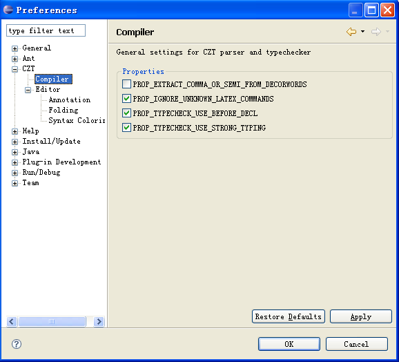

The CZT > Compiler preference page allows to configure the various properties of the section manager for parsing and typechecking of Z specifications.

The following properties can be set in this page:|
Option |
Description |
Default |
|---|---|---|
|
PROP_EXTRACT_COMMA_OR_SEMI_FROM_DECORWORDS |
When set to true, the parser tools extract symbol characters COMMA, SEMICOLON,and FULL STOP from the beginning and end of a WORD token to become WORDs themselves. This is a planned change to the Z Standard; see the Draft Technical Corrigendum 1: Corrections, including to use of Unicode, March 17th, 2006. As of now, this has yet to be submitted for official ballot. |
On |
|
PROP_IGNORE_UNKNOWN_LATEX_COMMANDS |
When set to true, the parser tools will ignore unknown LaTeX commands (that is, give a warning and use the name of the command) instead of reporting an error. Reporting an error is Standard conforming but ignoring those unknown commands is sometimes convenient. |
On |
|
PROP_TYPECHECK_USE_BEFORE_DECL |
When this property is true, the typechecker will check that names are declared before they are used. |
On |
|
PROP_TYPECHECK_USE_STRONG_TYPING |
Note: This property will affect object Z only. When this property is true, the typechecker will check the specification using strong typing. |
On |